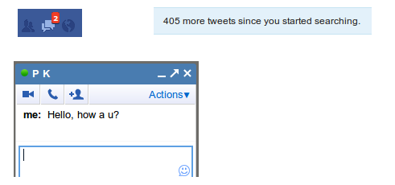
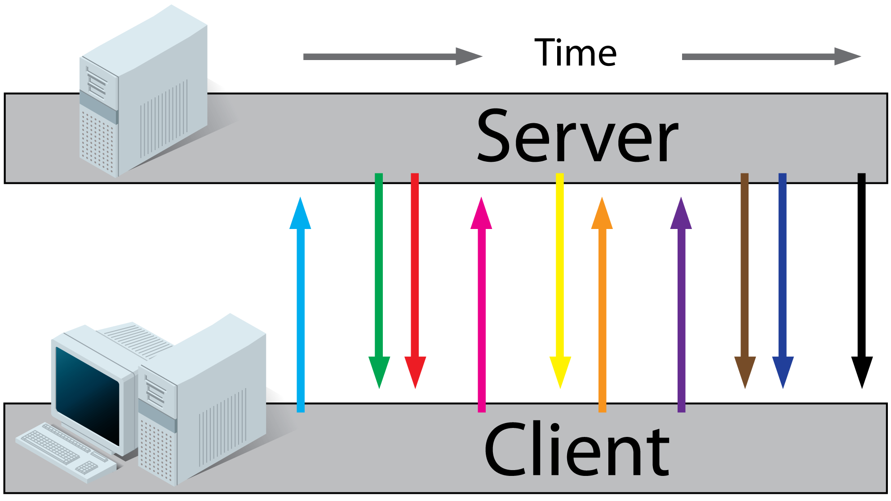
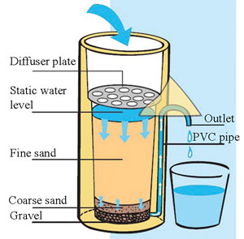
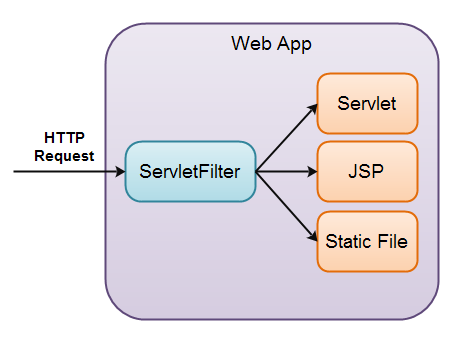
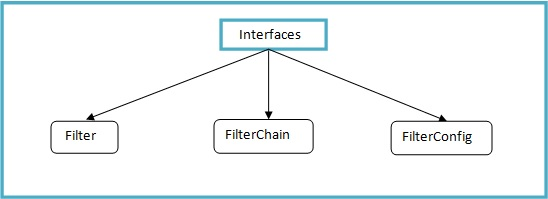
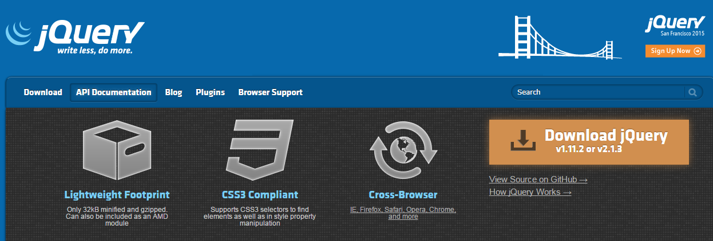

Servlets 3.1
Comet
Async support
Created by Ilya Buziuk / @ilyabuziuk
Quick Revision

Servlet Scopes
-
Application / Context
-
Session
-
Request
Questions ?
“In fact, the little details are by far the most important”

Comet
Comet is a collection of techniques prior to HTML5 which use streaming and long-polling to achieve real time applications
Push Notifications
Comet
-
Ajax Polling
-
Ajax Long-Polling
-
Endless iFrame
-
WebSockets
Simple HTTP request
Ajax Polling

Long-Polling

Web Sockets
Why Comet ?
Long-Polling
Client and Server side combo
Implementation details
-
A client requests a webpage from a server using regular http
-
The server does not immediately respond with the requested information but waits until there's new information available
-
When there's new information available, the server responds with the new information
-
The client receives the new information and immediately sends another request to the server, re-starting the process.
Long-Polling Front-end
(function poll() {
$.ajax({
url : "http://localhost:8080/LongPollingSample/longpolling",
success : function(data) {
output.innerHTML += "" + data;
},
dataType : "text",
complete : poll,
timeout : 300000
});
})();
DEMO
Long-Polling Back-end
Ground work on Server Side
Async Servlet + AsyncContext
The whole point is the ability to handle more than one request by a single thread
Async Servlet
asyncSupported = true
@WebServlet(name = "DemoAsyncServlet", urlPatterns = {"/asyncHello"}, asyncSupported = true)
AsyncContext
//Starting the asynchronous handling and obtaining the AsyncContext object.
AsyncContext ac = request.startAsync();
AsyncListener
public void onComplete(AsyncEvent event) throws IOException;
public void onTimeout(AsyncEvent event) throws IOException;
public void onError(AsyncEvent event) throws IOException;
public void onStartAsync(AsyncEvent event) throws IOException;
AsyncContext + AsyncListener
asyncContext.addListener(new CustomAsyncListener());
@WebListner
Listening to events in a web containers
@WebListner
-
ServletContextListener
-
ServletRequestListener
-
ServletRequestAttributeListener
-
HttpSessionListener
-
HttpSessionAttributeListener
ServletContextListener
public void contextInitialized(ServletContextEvent sce);
public void contextDestroyed(ServletContextEvent sce);
ServletRequestListener
public void requestDestroyed(ServletRequestEvent sre);
public void requestInitialized(ServletRequestEvent sre);
HttpSessionAttributeListener
public void attributeAdded(HttpSessionBindingEvent event);
public void attributeRemoved(HttpSessionBindingEvent event);
public void attributeReplaced(HttpSessionBindingEvent event);
Questions ?
Filters
Servlet Filters
Monitoring request and response from client to the servlet
Servlet Filters
Servlet Filters
-
Validation
-
Authentication
-
Data compression
-
Internationalization
Filter API Interfaces
FilterConfig
getFilterName()
getInitParameter(String)
getInitParameterNames()
getServletContext()
Filter
init(FilterConfig)
doFilter(ServletRequest, ServletResponse, FilterChain)
destroy()
Authentication
Filter + Session
HTTP session

Custom Filter
-
implement Filter
-
Add @WebServlet Annotation
-
Override doFilter
Filter Chain
// pass the request along the filter chain
chain.doFilter(request, response);
Apache Log4j
Classic logging tool in Java
Why do we need logging?
System.out.println vs. Log4j
Log4j output
-
console
-
file
-
database
-
email server
Ways of configuration
-
Property file
-
XML
-
Java code
Log4j levels
-
OFF
-
FATAL
-
ERROR
-
WARN
-
INFO
-
DEBUG
-
TRACE
log4j.properties file
From theory to practise
TODOs 6.0
jQuery
Feature-rich JavaScript library
jQuery
jQuery
Feature-rich JavaScript library
Key Features
-
DOM Traversal and Manipulation
-
Event Handling
-
Ajax